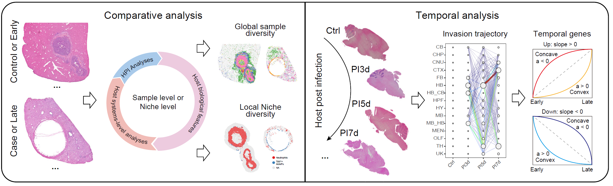
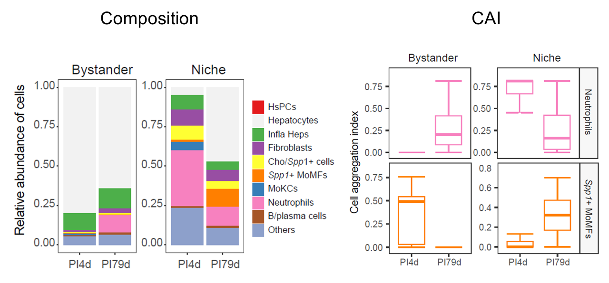
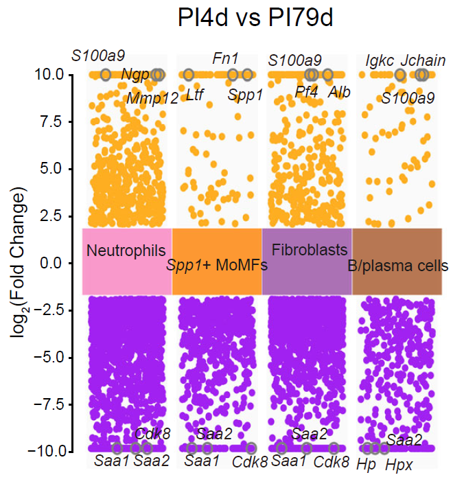
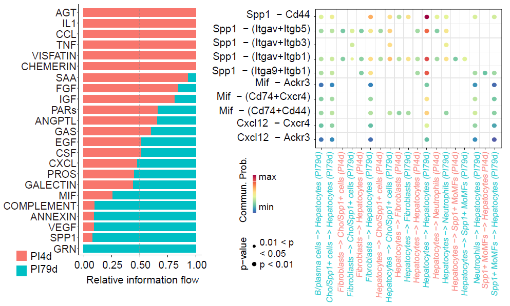
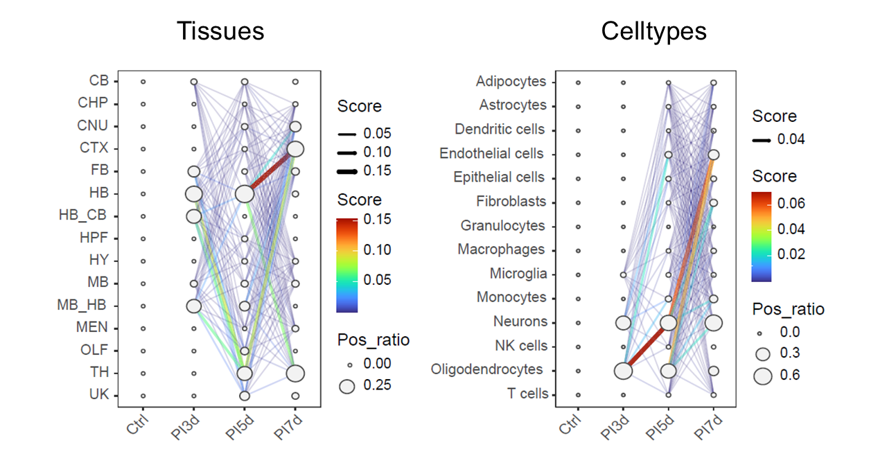
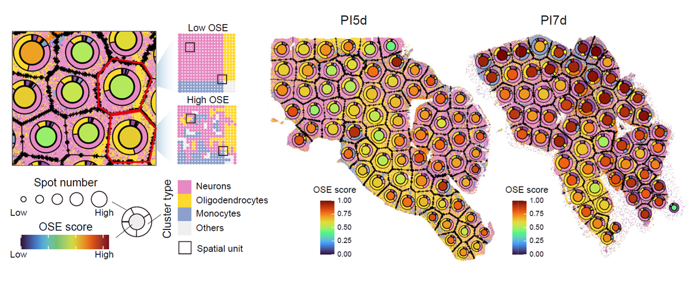
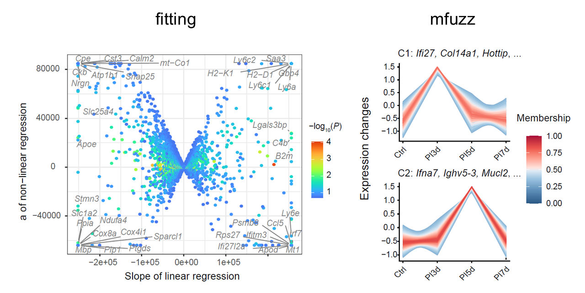

Overview
This vignette describes a multi-sample workflow for comparing
infection-associated niches across samples or ordered time points with
STID. It starts from single-sample niche objects and
generates multi-sample niche objects for comparative and temporal
analyses.
The workflow covers:
- constructing multi-sample niche objects for comparative or temporal study designs;
- quantifying pathogen load, tissue composition, cell-type composition, and cell aggregation;
- identifying niche-associated genes and cell-cell communication patterns across samples;
- inferring pathogen invasion trajectories and temporal gene modules;
- measuring spatial organizational entropy during infection progression.
Dataset-specific settings: Set the input
STIDobject, sample identifiers, comparison mode, niche keys, metadata keys, annotation columns, color vectors, gene filters, output group names, and figure paths according to the dataset being analyzed.

Overview of multi-sample niche analysis.
Prerequisites
The workflow requires tidyverse, Seurat,
and STID. It assumes that single-sample niche objects have
been generated as described in
06_Single-sample_analysis.Rmd. Temporal analyses also
require consistent sample ordering and harmonized metadata across time
points.
Example data
Two input strategies are provided. Comparative analysis uses a
single-sample niche object from the previous vignette. Temporal analysis
starts from the infection-associated niche object generated in
05_Infection-associated_niche_identification.Rmd, adds
single-sample niche metadata for each time point, and then combines the
samples into a temporal multi-sample object.
Dataset-specific settings: Set
STID_obj_SS,STID_obj_detect,loop_id,compare_mode,niche_key, metadata keys, ROI columns, and annotation columns to the corresponding objects and labels in the study. For temporal analyses, orderloop_idaccording to the biological time course.
Prepare a comparative multi-sample niche object
CreateMultiSampNiche() aggregates selected single-sample
niches into a multi-sample object. In comparative mode,
loop_id specifies the samples or sample groups to
compare.
STID_obj_MS <- CreateMultiSampNiche(
STID_obj = STID_obj_SS,
multi_id = NULL,
loop_id = c("DPI_4_2", "DPI_79_1"),
compare_mode = "Comparative",
niche_key = "Niche",
description = NULL
)Prepare a temporal multi-sample niche object
For temporal analysis, construct single-sample niche metadata for each time point and then combine the ordered samples into a temporal multi-sample object. The example creates separate microbial and host niche tracks.
# Define tissue colors
col_lasso_tissue <- c(
"OLF" = "#FFDEAD", "CTX_HPF" = "#8FBC8F", "HPF" = "#A0522D",
"TH" = "#7FFFAA", "HY" = "#FFC0CB", "CNU" = "#FF8C00",
"MB" = "#000080", "HB" = "#9932CC", "CB" = "#87CEEB",
"FB" = "#FFFF00", "MEN" = "#FF0000", "CHP" = "#006400",
"UK" = "#D2B48C", "MB_HY" = "#7B68EE", "MB_HY_HB" = "#EF6FD0",
"HB_CB" = "#A9A9A9", "MB_HB" = "#FF1493", "CTX" = "#80AD80",
"MB_CNU" = "#C1F1A4", "MB_CNU_HB" = "#B6A7E2", "TH_HY" = "#F7D89A"
)
col_lasso_tissue2 <- c(
"OLF" = "#FFDEAD", "CTX_HPF" = "#8FBC8F", "HPF" = "#A0522D",
"TH" = "#7FFFAA", "HY" = "#FFC0CB", "CNU" = "#FF8C00",
"MB" = "#000080", "HB" = "#9932CC", "CB" = "#87CEEB",
"FB" = "#FFFF00", "MEN" = "#FF0000", "CHP" = "#006400",
"UK" = "#D2B48C", "MB_HY" = "#7B68EE", "MB_HY_HB" = "#EF6FD0",
"HB_CB" = "#A9A9A9", "MB_HB" = "#FF1493", "CTX" = "#80AD80",
"MB_CNU" = "#C1F1A4", "MB_CNU_HB" = "#B6A7E2", "TH_HY" = "#F7D89A"
)
# Define cell-type colors
col_lasso_cell <- c(
"#E41A1C", "#377EB8", "#000080", "#4DAF4A", "#984EA3",
"#FF7F00", "#FFFF33", "#A65628", "#F781BF", "#66C2A5",
"#8DA0CB", "#E78AC3", "#A6D854", "#FFD92F", "#E5C494"
)
names(col_lasso_cell) <- unique(STID_obj_detect@meta.data$new_cell) %>% sort()
col_lasso_cell2 <- c(
"#E41A1C", "#377EB8", "#000080", "#4DAF4A", "#984EA3",
"#FF7F00", "#FFFF33", "#F781BF", "#66C2A5", "#8DA0CB",
"#E78AC3", "#A6D854", "#FFD92F", "#E5C494"
)
names(col_lasso_cell2) <- c(
"Adipocytes", "Astrocytes", "Dendritic cells", "Endothelial cells",
"Epithelial cells", "Fibroblasts", "Macrophages", "Microglia",
"Monocytes", "Neurons", "NK cells", "Oligodendrocytes", "T cells"
)
# Define color vectors used in the comparative examples.
# Update these vectors to match the levels of the column specified in `group_by`.
col_lasso <- col_lasso_cell
col_lasso2 <- col_lasso_cell2
# Construct single-sample niche metadata
STID_obj_SS <- CreateSingleSampNiche(
STID_obj = STID_obj_detect,
niche_key = "Niche_microbe",
meta_key = list(c("M2_NicheDetect_STS_STS_JEV_multisamp_microbe_region")),
ROI_type = "ROI",
pos_colnm = "ROI_label",
center_colnm = "ROI_center",
edge_colnm = "ROI_edge",
all_label_colnm = "All_ROI_label",
all_dist_colnm = "All_Dist2ROIcenter",
description = NULL
)
STID_obj_SS <- CreateSingleSampNiche(
STID_obj = STID_obj_SS,
niche_key = "Niche_host",
meta_key = list(c("M2_NicheDetect_STS_STS_JEV_multisamp_host_region")),
ROI_type = "ROI",
pos_colnm = "ROI_label",
center_colnm = "ROI_center",
edge_colnm = "ROI_edge",
all_label_colnm = "All_ROI_label",
all_dist_colnm = "All_Dist2ROIcenter",
description = NULL
)
STID_obj_SS <- AddSSNicheCells(
STID_obj = STID_obj_SS,
meta_key = "raw",
select_colnm = "new_tissue",
niche_key = "Niche_microbe"
)
STID_obj_SS <- AddSSNicheCells(
STID_obj = STID_obj_SS,
meta_key = "raw",
select_colnm = "new_tissue",
niche_key = "Niche_host"
)
# Construct multi-sample niche metadata
STID_obj_MS <- CreateMultiSampNiche(
STID_obj = STID_obj_SS,
multi_id = NULL,
loop_id = c("D3_1", "D5_1", "D7_1"),
compare_mode = "Temporal",
niche_key = "Niche_microbe",
description = NULL
)
STID_obj_MS <- CreateMultiSampNiche(
STID_obj = STID_obj_MS,
multi_id = NULL,
loop_id = c("D3_1", "D5_1", "D7_1"),
compare_mode = "Temporal",
niche_key = "Niche_host",
description = NULL
)Comparative multi-sample analysis
Most single-sample niche functions can be applied to multi-sample
objects by setting samp_mode = "MS" and specifying the
relevant multi-sample loop_id. This section compares
composition, aggregation, differential expression, and cell-cell
communication across samples.
Dataset-specific settings: Set
loop_id,samp_grp_index,meta_key,niche_key,group_by, and color vectors for each comparison. UseLoopAllMultito summarize all multi-sample groups or a specific identifier such asComparative_2_4for one comparison.
Tissue composition, cell-type composition, and cell aggregation
AddMSNicheCells() appends selected metadata to the
multi-sample niche object. CalSampComp() compares
pathogen-positive proportions or annotation-level composition, and
CalSampCAI() evaluates local aggregation of annotated cell
populations.
# Pathogen-positive proportion
STID_obj_MS <- AddMSNicheCells(
STID_obj = STID_obj_MS,
loop_id = "Comparative_2_4",
meta_key = "M1_SpotDetect_Gene_CE_correct_after_host_gene_white",
select_colnm = "Label_all_gene_nFeature(sum)",
niche_key = "Niche"
)
CalSampComp(
STID_obj = STID_obj_MS,
samp_mode = "MS",
loop_id = "LoopAllMulti",
samp_grp_index = TRUE,
meta_key = "M1_SpotDetect_Gene_CE_correct_after_host_gene_white",
niche_key = NULL,
group_by = "Label_all_gene_nFeature(sum)",
col = rev(c("#E41A1C", "#377EB8")),
return_data = FALSE
)
# Tissue and cell-type composition
CalSampComp(
STID_obj = STID_obj_MS,
samp_mode = "MS",
loop_id = "LoopAllMulti",
samp_grp_index = TRUE,
niche_key = NULL,
group_by = "anno",
col = col_lasso,
return_data = FALSE
)
# Cell aggregation index
ms_cai <- CalSampCAI(
STID_obj = STID_obj_MS,
samp_mode = "MS",
loop_id = "LoopAllMulti",
samp_grp_index = TRUE,
meta_key = NULL,
niche_key = "Niche",
group_by = "anno",
k_neighbors = 8,
min_agg_size = 10,
dist_thres = 1,
col = col_lasso
)
Pathogen-positive proportions, annotation composition, and aggregation across multi-sample niches.
Differential expression analysis
CalSampDEGs() identifies genes associated with selected
cell populations or niche groups across multi-sample comparisons. The
example filters predicted genes and pathogen-derived features before
testing host transcriptional differences.
Dataset-specific settings: Set
loop_id,group_by,group_value,assay_id, thresholds, gene filters, andgrp_nmfor the comparison and feature space. If the selectedniche_keyyields too few genes, use broader annotation groups or adjust the tested group set.
MS_DEGs <- CalSampDEGs(
STID_obj = STID_obj_MS,
samp_mode = "MS",
loop_id = "Comparative_2_4",
samp_grp_index = TRUE,
logfc_thres = 2,
group_by = "anno",
group_value = c("Neutrophils", "Spp1+ MoMFs", "Fibroblasts", "B/plasma cells"),
assay_id = "Spatial",
padj_thres = 0.05,
adjust_method = "BH",
col = col_lasso,
remove_genes = c(
grep("^Gm", rownames(STID_obj_MS), value = TRUE),
grep("^EmuJ", rownames(STID_obj_MS), value = TRUE)
),
grp_nm = "Comparative_2_4_All"
)
Differential expression analysis across comparative multi-sample niches.
Cell-cell communication analysis
Cell-cell communication results generated in the single-sample
workflow can be visualized in multi-sample niches by setting
samp_mode = "MS" in Plot_NicheCellComm(). This
reuses the same CellComm_data object for sample-level
comparisons.
Dataset-specific settings: Use a
CellComm_dataobject generated from the same expression matrix and annotation scheme. Setloop_id, signaling pathways, ligand-receptor pairs, and color vectors according to the comparison.
Plot_NicheCellComm(
STID_obj = STID_obj_MS,
CellComm_data = CellComm_data,
samp_mode = "MS",
loop_id = "Comparative_2_4",
signaling = c("CXCL", "CCL", "SAA", "SPP1", "MIF", "VEGF", "FGF"),
pairLR.use = NULL,
col = col_lasso2
)
Cell-cell communication patterns across comparative multi-sample niches.
Temporal multi-sample analysis
Temporal multi-sample analysis uses ordered sample identifiers to
evaluate changes in pathogen distribution, spatial organization, and
host transcriptional programs. The following sections assume that
STID_obj_MS contains temporal niches generated with
compare_mode = "Temporal".
Dataset-specific settings: Confirm that
loop_idfollows the biological time order, that metadata columns are harmonized across samples, and thatsamp_grp_indexmatches the structure of the temporal object.
Pathogen invasion trajectory analysis
CalSampPathoTrack() infers potential pathogen
propagation between adjacent time points by combining pathogen-positive
load in source annotations with the increase in pathogen-positive load
in target annotations.
For two adjacent time points, the propagation score is defined as:
Only target annotations with increased pathogen-positive load are retained. The resulting network summarizes the inferred direction and relative magnitude of pathogen spread across tissues or cell types.
Dataset-specific settings: Set
loop_id,pos_colnm,neg_value,meta_key,group_by,col,grp_nm, anddir_nmto match the pathogen-detection metadata and annotation level. Use tissue-level or cell-type-level annotations according to the biological question.
CalSampPathoTrack(
STID_obj = STID_obj_MS,
loop_id = "Temporal_1_2_3",
pos_colnm = "Label_all_gene_nFeature(sum)",
neg_value = "neg",
samp_grp_index = FALSE,
meta_key = "M1_SpotDetect_Gene_JEV_multisamp_microbe_gene",
niche_key = NULL,
group_by = "new_cell",
col = col_lasso_cell,
return_data = FALSE,
grp_nm = "Temporal_1_2_3_cell",
dir_nm = "M4_CalSampPathoTrack"
)
Inferred pathogen invasion trajectories across temporal multi-sample niches.
Spatial organizational entropy analysis
CalSampOSE() quantifies spatial organizational entropy
(OSE) to evaluate changes in local tissue or cell-type organization
during infection. Higher entropy indicates greater heterogeneity in
local spatial organization.
Spots are grouped into local spatial units, unit-type frequencies are summarized within each region, and entropy is normalized by the expected number of observed unit types to improve comparability across regions with different spot counts.
The adjusted entropy is:
where N is the total number of possible unit types and
n is the number of observed local spatial units.
Dataset-specific settings: Set
loop_id,meta_key,group_by, color vectors,grp_nm, anddir_nmaccording to the temporal object. Useonly_plot = FALSEwhen entropy values are needed for downstream statistics.
CalSampOSE(
STID_obj = STID_obj_MS,
loop_id = "Temporal_1_2_3",
meta_key = "M1_SpotDetect_Gene_JEV_multisamp_microbe_gene",
group_by = "new_cell",
col = col_lasso_cell,
only_plot = TRUE,
return_data = FALSE,
grp_nm = "Temporal_1_2_3_cell",
dir_nm = "M4_CalSampOSE"
)
Spatial organizational entropy across temporal multi-sample niches.
Temporal gene module identification
CalSampGeneTrend() identifies dynamic host
transcriptional programs across ordered samples. The function supports
trend fitting for directional or nonlinear temporal patterns and fuzzy
clustering for module-level trajectories.
In fitting mode, genes are classified by linear and quadratic trend components. In clustering mode, fuzzy c-means clustering groups genes into temporal modules and identifies core genes by membership scores.
Dataset-specific settings: Set
loop_id,meta_key,niche_key,group_by,gene_list,method, gene filters,grp_nm, anddir_nmaccording to the temporal comparison. Usemethod = "fitting"for interpretable trend classes andmethod = "mfuzz"for module-level trajectories.
gene_trend_fit <- CalSampGeneTrend(
STID_obj = STID_obj_MS,
loop_id = "Temporal_1_2_3",
samp_grp_index = FALSE,
meta_key = "M1_SpotDetect_Gene_JEV_multisamp_microbe_gene",
niche_key = NULL,
group_by = NULL,
gene_list = NULL,
method = "fitting",
col = col_lasso_cell,
remove_genes = c(
grep("^Gm", rownames(STID_obj_MS), value = TRUE),
grep("Rik$", rownames(STID_obj_MS), value = TRUE)
),
return_data = TRUE,
grp_nm = "Temporal_1_2_3_fitting_all",
dir_nm = "M4_CalSampGeneTrend"
)
gene_trend_mfuzz <- CalSampGeneTrend(
STID_obj = STID_obj_MS,
loop_id = "Temporal_1_2_3",
samp_grp_index = FALSE,
meta_key = "M1_SpotDetect_Gene_JEV_multisamp_microbe_gene",
niche_key = NULL,
group_by = NULL,
gene_list = NULL,
method = "mfuzz",
col = col_lasso_cell,
remove_genes = c(
grep("^Gm", rownames(STID_obj_MS), value = TRUE),
grep("Rik$", rownames(STID_obj_MS), value = TRUE)
),
return_data = TRUE,
grp_nm = "Temporal_1_2_3_mfuzz_all",
dir_nm = "M4_CalSampGeneTrend"
)
Temporal gene modules across ordered multi-sample niches.
Notes
Multi-sample analyses require consistent sample identifiers,
annotation columns, and niche metadata across selected samples. Review
loop_id, compare_mode, niche_key,
meta_key, group_by, and output names before
running each section. For temporal analyses, loop_id must
follow the biological time course.
Session information
sessionInfo()
#> R version 4.2.0 (2022-04-22 ucrt)
#> Platform: x86_64-w64-mingw32/x64 (64-bit)
#> Running under: Windows 10 x64 (build 22000)
#>
#> Matrix products: default
#>
#> locale:
#> [1] LC_COLLATE=Chinese (Simplified)_China.utf8
#> [2] LC_CTYPE=Chinese (Simplified)_China.utf8
#> [3] LC_MONETARY=Chinese (Simplified)_China.utf8
#> [4] LC_NUMERIC=C
#> [5] LC_TIME=Chinese (Simplified)_China.utf8
#>
#> attached base packages:
#> [1] stats graphics grDevices utils datasets methods base
#>
#> loaded via a namespace (and not attached):
#> [1] digest_0.6.35 R6_2.6.1 jsonlite_1.8.8 lifecycle_1.0.5
#> [5] evaluate_1.0.1 cachem_1.1.0 rlang_1.1.7 cli_3.6.5
#> [9] rstudioapi_0.15.0 fs_1.6.3 jquerylib_0.1.4 bslib_0.8.0
#> [13] ragg_1.3.0 rmarkdown_2.29 pkgdown_2.2.0 textshaping_0.3.6
#> [17] desc_1.4.3 tools_4.2.0 htmlwidgets_1.6.4 yaml_2.3.10
#> [21] xfun_0.49 fastmap_1.2.0 compiler_4.2.0 systemfonts_1.0.4
#> [25] htmltools_0.5.8.1 knitr_1.49 sass_0.4.9